ICIMC 2026 · Seoul Olympic Parktel · November 3–7, 2026
Linking CIE L*a*b* colorimetry to corrosion rate
Seonghun Woo, Junbeom Park, Beomsoo Kim, Jaeseung Kwon, Jung-Pil Noh, Jeonghyeon Yang*
Department of Mechanical System Engineering, Gyeongsang National University, Tongyeong, Korea · * Corresponding author
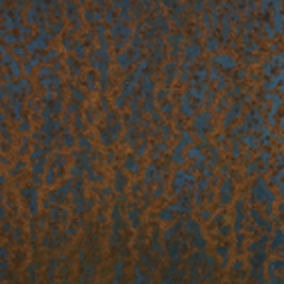
of global GDP lost to corrosion
Swatch colors are illustrative.
Can one color value from a photograph report the corrosion rate of bare carbon steel?
9 sampling points · 0–30 cycles (240 h) · 2 specimens per point
Q-FOG CCT-600 · modified ISO 14993
30 × 70 × 1 mm · 0.12 wt.% C
SiC #220 ground · ethanol ultrasonic clean
Salt residue disturbed imaging → chloride-free atmospheric test
Sampling points (cycles) · 30 cycles = 240 h · 2 specimens per point · 18 specimens
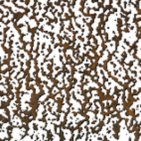
HSV maskH 10–60°, S > 24%, V > 16%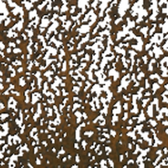
Common regionPixels rust in ≥ 5 of 9 intervals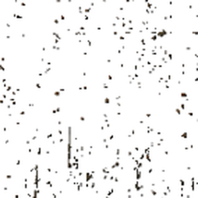
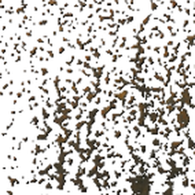
Polarization resistance, Rp (Ω·cm²)
Corrosion rate (mmpy)
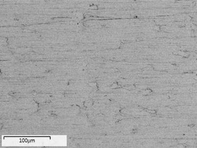
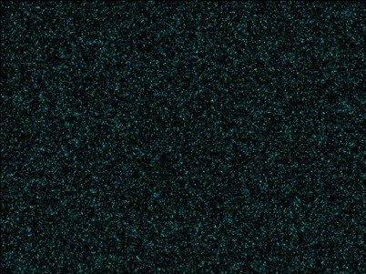
5 cyc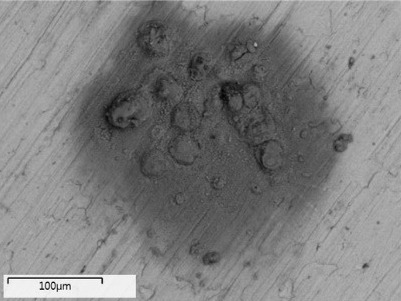
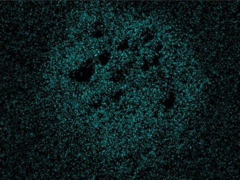
15 cyc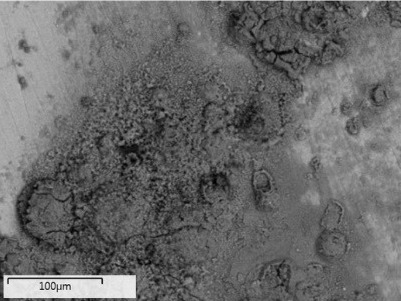
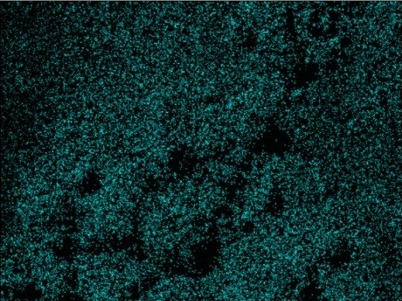
30 cyc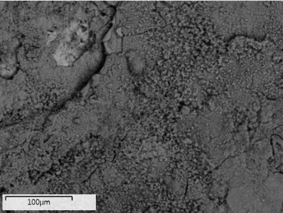
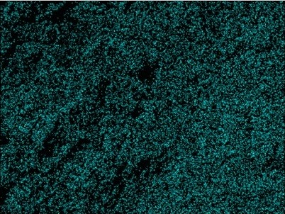
EDS oxygen content (map sum, wt.%)
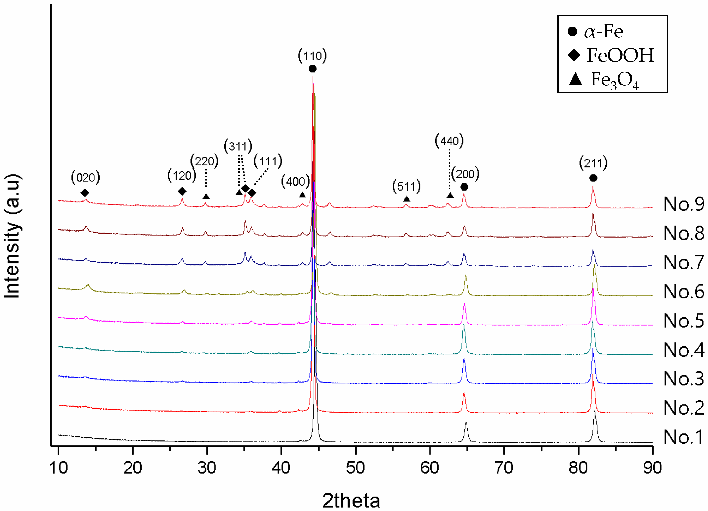
Phase detected by XRD
γ-FeOOH stayed dominant for all 240 h
L* (lightness)
Linear fit, R²
Spearman ρ with corrosion rate
p = 0.0009 (L*) · 0.0016 (b*) · 0.0228 (a*)
Rises with damage; the |ρ| gap to L* is small
One phase moves both signals
All rise sharply in propagation
Rust area and b* plateau in maturation; Sz and corrosion rate keep rising → the layer thickens, not spreads
Sz 0.02 → 0.10 mm (5×)
One color value placed bare steel in one of three corrosion-rate bands
Reports the phase make-up of the outer few µm — not total metal loss
Equal thickness, different γ-FeOOH fraction → different b*
Questions are welcome.
Seonghun Woo · zscfvgbb@naver.com
Department of Mechanical System Engineering, Gyeongsang National University
Acknowledgment — This research was part of the project “Training Blue Tech Leaders for Eco-Friendly Ships” (No. RS-2025-02220459), funded by the Ministry of Oceans and Fisheries, Korea.